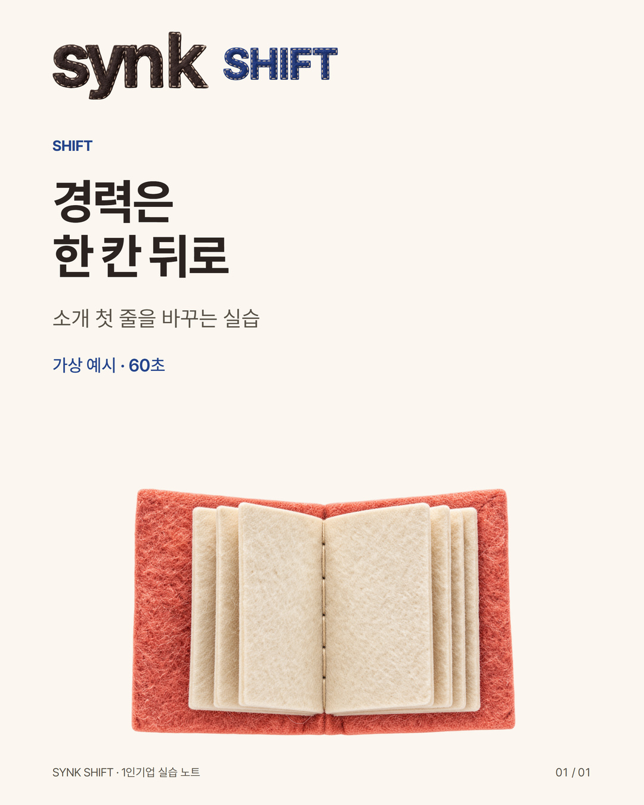

YouTube · @yuhobuilds
첫 소개에서 경력을 한 칸 뒤로
기존 실행지에 기록됨 · 오늘 로그인/업로드 가능 여부는 별도 확인 · 로컬 제작본 · 미게시

이 계정에 올릴 본문
소개 첫 줄은 나에 대한 평가보다, 보는 사람이 자기 상황을 찾는 자리로 써볼 수 있습니다.
가상 예시 — 촬영을 가르치는 1인 강사
원문: 다양한 경험을 바탕으로 최상의 촬영 노하우를 전합니다.
수정: 수공예 판매자가 휴대폰으로 제품 사진 세 컷을 찍어 보는 실습입니다.
경력을 지우자는 뜻은 아닙니다. 누구를 위한 어떤 활동인지 먼저 적고, 확인 가능한 경력은 그다음에 근거로 붙입니다.
내 일로 바꾸는 빈칸
누구에게: ______
함께 하는 활동: ______
끝에 남는 것: ______
세 줄을 연결한 뒤 실제 제공할 수 없는 부분을 지우세요. 사진 세 컷은 이 가상 실습의 산출물이지 판매 증가 보장이 아닙니다.
대상이 안 잡히면 ‘언제 필요한가’를 더 쓰고, 결과가 막연하면 파일·문장·연습처럼 눈에 보이는 형태로 바꿔보세요.
쓰다가 막힌 곳은 대상, 활동, 결과물 중 어디인가요? 개인 사업자료를 공개할 필요는 없습니다.
가져가는 도움
소개 세 줄 실습
설명글의 세 빈칸을 내 일로 바꿔 써보세요.
긴 글 · 원문
소개 첫 줄은 나에 대한 평가보다, 보는 사람이 자기 상황을 찾는 자리로 써볼 수 있습니다.
가상 예시 — 촬영을 가르치는 1인 강사 원문: 다양한 경험을 바탕으로 최상의 촬영 노하우를 전합니다. 수정: 수공예 판매자가 휴대폰으로 제품 사진 세 컷을 찍어 보는 실습입니다.
경력을 지우자는 뜻은 아닙니다. 누구를 위한 어떤 활동인지 먼저 적고, 확인 가능한 경력은 그다음에 근거로 붙입니다.
내 일로 바꾸는 빈칸 누구에게: ______ 함께 하는 활동: ______ 끝에 남는 것: ______
세 줄을 연결한 뒤 실제 제공할 수 없는 부분을 지우세요. 사진 세 컷은 이 가상 실습의 산출물이지 판매 증가 보장이 아닙니다.
대상이 안 잡히면 ‘언제 필요한가’를 더 쓰고, 결과가 막연하면 파일·문장·연습처럼 눈에 보이는 형태로 바꿔보세요. 쓰다가 막힌 곳은 대상, 활동, 결과물 중 어디인가요? 개인 사업자료를 공개할 필요는 없습니다.
게시 준비
YouTube · @yuhobuilds
첫 소개에서 경력을 한 칸 뒤로
- 게시 순서 추천: 6
- 계정 상태: 기존 실행지에 기록됨 · 오늘 로그인/업로드 가능 여부는 별도 확인
- 원고 언어: 한국어. 실제 반응/사업 효과 미측정.
- 받는 사람: 지식·서비스를 혼자 운영하거나 준비하는 성인. 한국어 독자를 1차 권장 대상으로 편집했으며 시장 검증 완료 주장은 아님.
- 이 게시물에서 가져갈 것: 소개 세 줄 실습
- 사용 파일: video.mp4. 카드 이미지는 표지입니다.
- 이미지 규격: 1080×1350 (4:5). master는 가로2160px의 보관 원본.
- 게시 본문: 게시문안.txt (복사할 공개 문장만). 긴 글은 본문.md.
- 끝맺음: 자료가 없어도 본문 속 팁으로 한 번 실행할 수 있습니다. 자료 링크는 실제 공개 후 열리는 주소를 확인한 경우에만 추가합니다.
- 본문 링크: YouTube Shorts 설명·댓글 URL은 클릭을 기대하지 않습니다. 같은 채널의 관련 영상 연결 조건은 전체 업로드조건 문서 참조.
- 추가 자료: ../제공자료/ 에 PDF와 수정 가능한 MD가 있습니다. 파일 첨부 지원 플랫폼에서만 올리세요.
- 대화: 댓글답변.md는 참고 예시. 실제 질문과 맞는지 확인 후 수동 답변합니다.
- 원본 계승: 04-yuhobuilds-youtube. 416403fba084500d2d0fa806a343f80ad223dd021318c4c910f40043afcbfcd3
- 이번 작업은 제작·로컬 검수입니다. 외부 게시/계정 생성/광고 집행/자동 DM은 하지 않았습니다.
전체 세부 조건: ../_검토/업로드조건.md